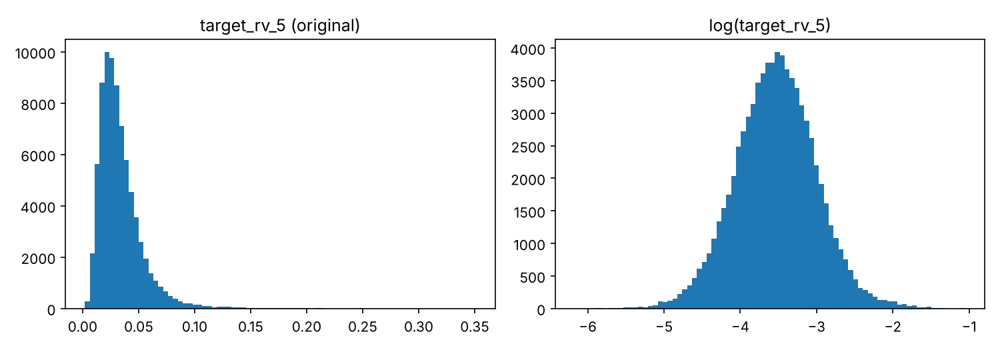
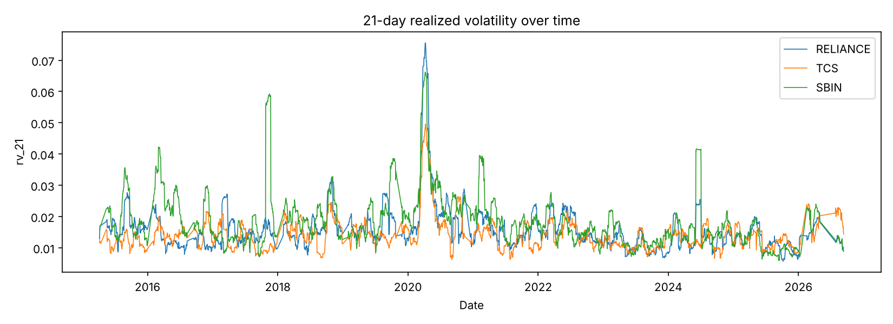
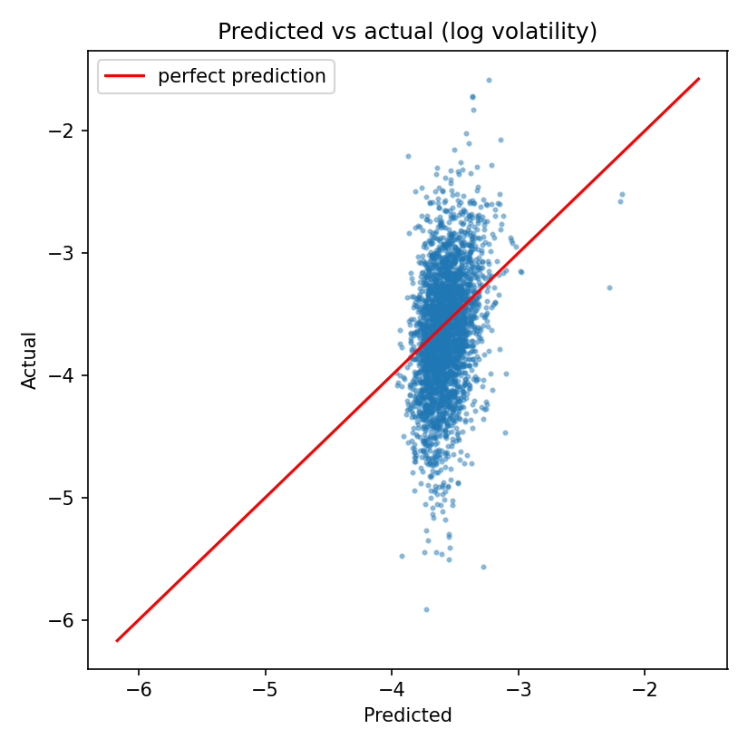

How much will a stock move over the next five trading days?
A regression model for the size of price moves in 30 large Indian companies. It was trained on 2015–2021, tuned on 2022–2023, and tested on 2024 to September 2026, days it never saw.
On the test period its error is 10.7% lower than guessing the training-set average (95% range: 8.8% to 12.7%). It follows the general level of volatility, but not the sudden spikes.
Try the model
Enter what is known when a trading day closes and get the model’s forecast for how big that stock’s moves will be over the next five trading days. Start from a real example day, or change any value. This runs the actual fitted model in your browser: it clips and scales the inputs, then multiplies them by the ridge weights, exactly as the Python code does.
Explore the predictions
Pick a stock and a window. Each point is one test day: the model’s forecast for the next five days, next to what actually happened.
Hover, tap or use the left and right arrow keys on the chart to read values. Lines break where the data has gaps of more than a week.
- Days in view
- –
- Model error (RMSE)
- –
- Baseline error (RMSE)
- –
- Model versus baseline
- –
- Largest miss in view
- –
Error is measured on the log scale, the scale the model was fitted on, so a miss of 0.5 means roughly a 1.6 times difference. Lower is better. Predictions are shown as volatility, converted back from the log scale.
The question
For each stock and each day, predict how large its price moves will be over the next five trading days, using only what was known when that day’s market closed.
The quantity being predicted, target_rv_5, is the square root of the sum of the squared daily log returns over the next five trading days. A value of 0.03 means those five daily moves add up, in root-sum-of-squares terms, to about 3%. It measures how big the moves are, not whether prices rise or fall.
The model predicts the logarithm of this quantity. Volatility is skewed, with a few wild weeks stretching the scale, and the log makes it far more even.

What this does not claim
The model says nothing about the direction of prices and is not trading advice. The conclusions apply to these 30 stocks and to 2015–2026.
The data
One row is one stock on one trading day: 30 large Indian listed companies, 77,490 rows, from 7 April 2015 to 11 September 2026.
Fill in before publishing: the data provider, the date it was obtained, the terms of use, and whether derived data may be shared. Replace this box with a sentence such as “Obtained from … on … under …”.
The inputs
- log_ret
- Today’s log return.
- ret_lag1
- The previous trading day’s return (rebuilt, see below).
- abs_ret
- The size of today’s return, ignoring direction.
- rv_5, rv_21, rv_63
- Realized volatility over the last 5, 21 and 63 days: the standard deviation of daily log returns, in daily units.
- hl_range
- The size of today’s high-to-low price range.
- vol_ratio
- Today’s trading volume relative to its recent level.
- mkt_ret, mkt_rv_21
- The market’s return today and its 21-day volatility.
- vix
- A market volatility index.
- stock, weekday
- Which company and which day of the week, as 0/1 columns.
What was checked, and what was found
- No missing, infinite or duplicate rows.
ret_lag1was identical to today’s return in every row, so it could not be yesterday’s. It was rebuilt from the previous row.neg_retis fully determined by two other columns (log_ret = abs_ret + 2 × neg_ret), so it was dropped. Keeping it would make the regression ill-defined.- 36 rows had a zero price range and a zero volume ratio. 29 of them fall on 18 March 2025, which points to a bad data feed. They were removed.
- Nine gaps of 30 days or more hit all stocks at once. The longest is 88 days, from 30 April to 27 July 2026. The first row after each gap was removed, because its “previous day” return is not from the previous day.
- Extreme moves, such as 23 March 2020, look like real events and were kept.
In total 336 of 77,490 rows (0.43%) were removed.

How the model was built
The data is split by time, never shuffled. Training uses the past, tuning uses the next stretch, and the test set is the final stretch, used once.
Hatched bars are 8-day gaps (not to scale). The target looks five trading days ahead, so each set stops 8 days before the next one starts. Without the gap, a training label would be built from days that belong to the next set.
Preparing the data
- Clean and check the rows, as listed above.
- Take the log of the target.
- Turn stock and weekday into 0/1 columns, dropping one category of each so that no column can be rebuilt from the others.
- Cap the most extreme 0.1% at each end of two heavy-tailed inputs,
vol_ratioandhl_range. - Scale the numeric inputs to mean 0 and spread 1.
The caps and the scaling use numbers measured on the training set only. Nothing from validation or test leaks into the preparation.
The models
- Training average. The same prediction for every row. Any real model has to beat this.
- Persistence. Recent volatility plus a constant: “next week will look like this week”.
- One-feature regression. The log of
rv_5alone, with the data choosing the weight. - Linear regression. All 44 inputs.
- Ridge regression. Linear regression with a penalty that shrinks the weights. The penalty strength, λ, is chosen on the validation set.
Both regressions are written from scratch with numpy, using the normal equation. No machine learning library is used.
Choosing λ
Validation error for each λ. It falls until λ = 1000 and rises after. The curve is flat near the minimum, so the exact value matters little. The test set played no part in this choice.
Results
All numbers below are on the test period (2024 to September 2026), with λ fixed from validation. Error is RMSE on the log scale, so lower is better.
| Model | Test error (RMSE) | Typical miss (MAE) | Versus training average |
|---|---|---|---|
| Training average | 0.5503 | 0.4343 | baseline |
| Persistence | 0.6674 | 0.5227 | 21.3% worse |
| One-feature regression | 0.5253 | 0.4121 | 4.5% better |
| Linear regression | 0.4981 | 0.3903 | 9.5% better |
| Ridge regression | 0.4915 | 0.3847 | 10.7% better |
Persistence does worse than the plain average. Recent volatility and next week’s volatility are only weakly related in this data: the correlation of their logs is about 0.3, so copying recent volatility adds more noise than it removes.
Is the gain real?
Resampling whole weeks of the test period 1,000 times gives a 95% range of 8.8% to 12.7% for ridge’s improvement over the baseline. Weeks are resampled, not single days, because neighbouring days share the same five-day window and are not independent. Ridge also beats the baseline in every test year:
| Year | Ridge error | Baseline error |
|---|---|---|
| 2024 | 0.4835 | 0.5145 |
| 2025 | 0.5036 | 0.5937 |
| 2026 (to September) | 0.4796 | 0.5207 |
What matters, and what doesn’t
Among the scaled numeric inputs, vix (weight 0.114) and hl_range (0.094) carry the largest weights, followed by rv_21 and rv_63 (about 0.05 each). Several inputs move together, so treat this ranking loosely.
Checks on the validation set show how much each part of the model contributes:
| Variant | Validation error | Versus average |
|---|---|---|
| All inputs (the final model) | 0.4529 | 13.9% better |
| Only rv_5, rv_21, rv_63 | 0.4640 | 11.8% better |
| No stock or weekday columns | 0.4517 | 14.1% better |
| Training on 2018 onwards only | 0.4602 | 12.5% better |
Past volatility alone gets most of the way, the market and price-range inputs add about two points, and the stock and weekday columns add nothing. Less training history costs about a point and a half.


Where it goes wrong
The ten largest test errors are all over-predictions: the model expected ordinary calm-market volatility and the real value was far lower. They come from HDFCBANK (8–10 September 2025), NTPC (11 and 14 July 2025), ICICIBANK (28 and 30 April 2025, 4 September 2025), ASIANPAINT (21 November 2025) and HCLTECH (28 April 2026).
- Nine are genuinely quiet weeks in the data. The next five daily moves were all below 0.3%, so targets of 0.002–0.004 follow directly from the returns. These are extreme: the median target is 0.029, and only 0.026% of rows fall below 0.0035.
- The inputs gave no warning. The model predicts a typical calm-market level and cannot reach tails this low. The log scale also magnifies them: a tenfold miss in volatility becomes a large error.
- One needs a caution. HDFCBANK’s daily moves of 0.02–0.05% for about a week, while its intraday range stayed near 1%, are unusual for a large bank. It may be a real quiet spell or a data issue; the file alone cannot settle it.
- HCLTECH is a data-gap artefact. The data has no rows between 30 April and 27 July 2026, and that target was computed from trading days missing from the file, so it cannot be reproduced from the rows available.
A broader pattern: on the calmest quarter of test days the model over-predicts by 0.146 on average on the log scale, while on the most stressed quarter the average error is only −0.011.
Limitations
- It forecasts the size of price moves, not their direction.
- Errors are correlated from day to day (0.77 between a stock’s error and the previous day’s), because five-day target windows overlap. The effective number of independent test points is smaller than the number of rows.
- The model explains only a modest share of the variation and cannot anticipate sudden spikes or near-zero weeks.
- One market regime in the test period, and only 30 large stocks, so the results may not carry over to other stocks or periods.
- The model is linear. A nonlinear model or extra inputs, such as longer-horizon volatility, might do better; this project did not test them.
Run the code
Put the three scripts and dataset.csv in one folder, then run them in order. They use only pandas, numpy and matplotlib. Split dates are fixed and the random seeds are fixed, so the numbers on this page can be reproduced.
pip install pandas numpy matplotlib
python preprocessing.py
python modelling.py
python evaluation.py- preprocessing.py: cleaning, features, time split, train-only capping and scaling, integrity checks.
- modelling.py: metrics, baselines, ridge and linear regression, tuning λ and sensitivity checks on validation.
- evaluation.py: the final test evaluation, error analysis, bootstrap range, plots and the predictions used by the explorer.
- export_model.py: writes
model.js, the fitted weights and scaling numbers that the calculator uses. It also checks that the browser formula reproduces the Python predictions on all 17,430 test rows.
The dataset itself is not included in this repository. model.js holds the fitted model’s numbers and five example days; data.js holds the model’s test-period predictions.